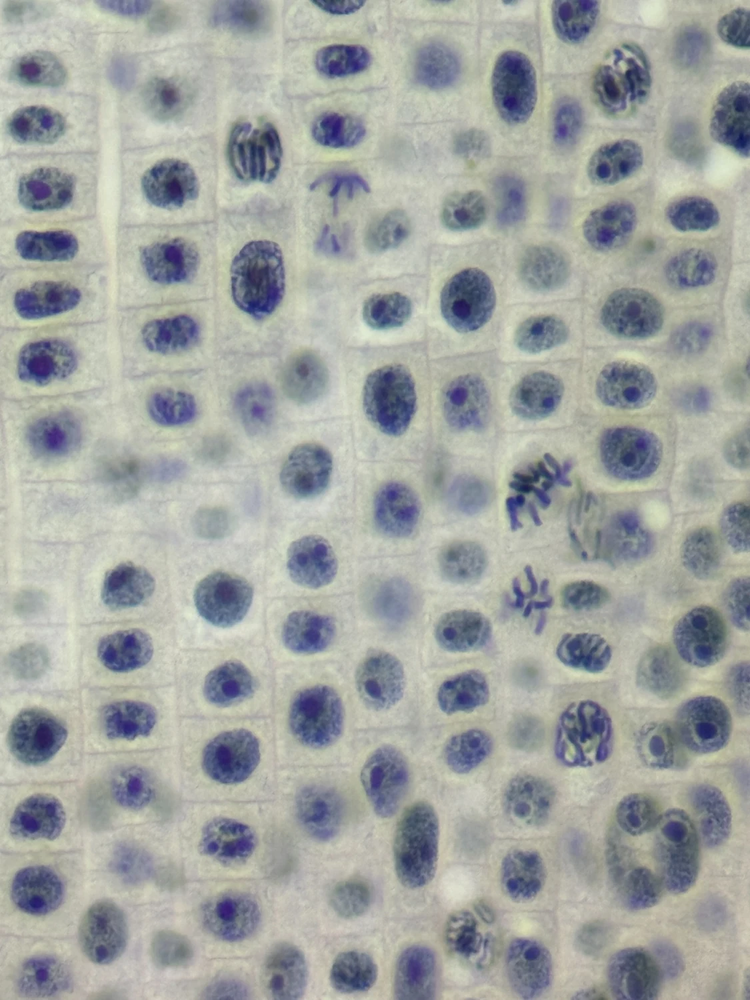
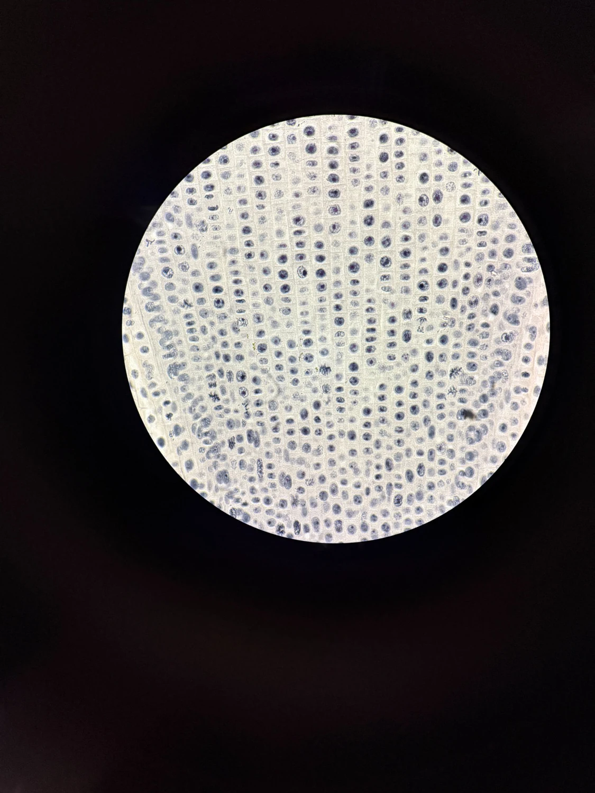

Actual microscopy photograph

Featured · Virtual microscopy lab
Cell Cycle Quest
Train with diagrams, then explore real onion root tip cells. Classify each stage, collect observations and build a timestamped graph for your lab report.
Launch the lab →